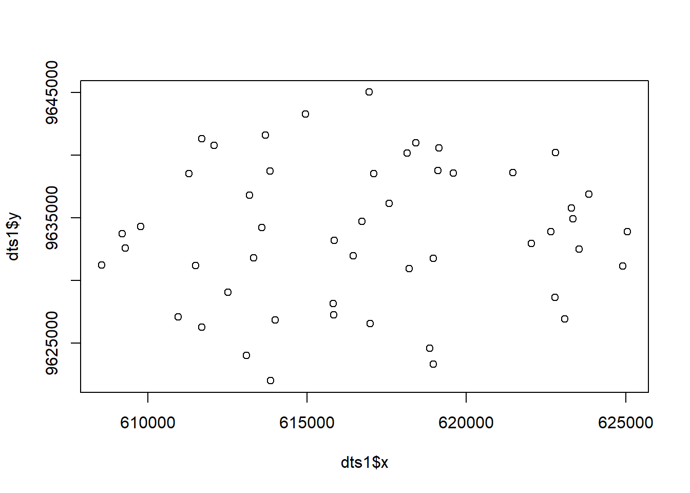
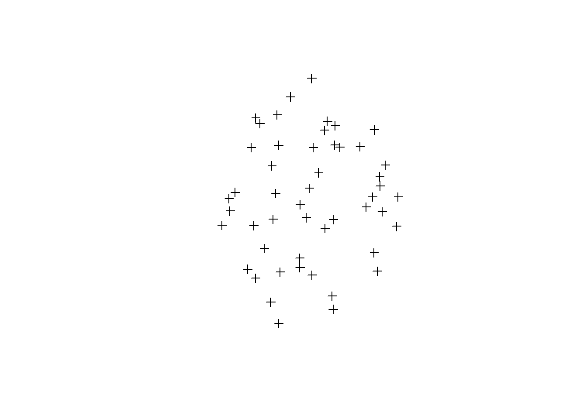
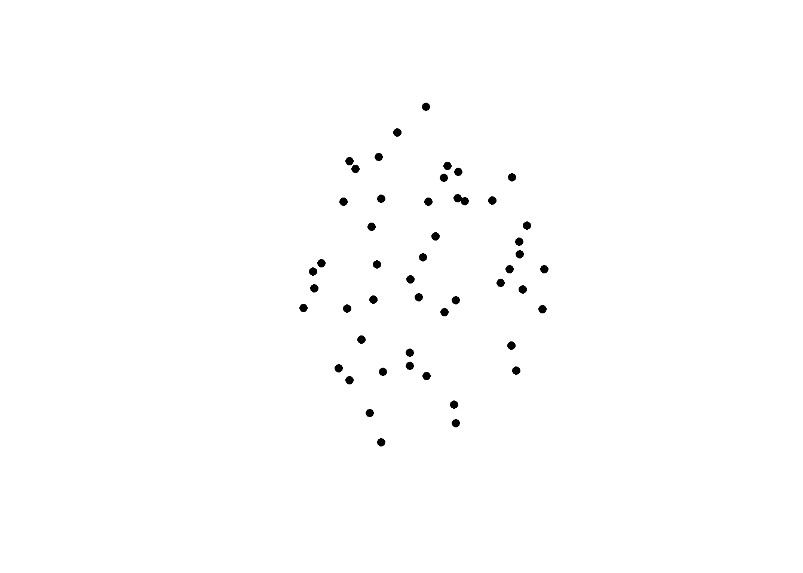
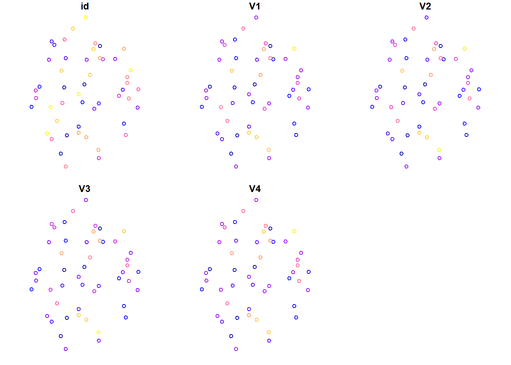

Universidad Técnica de Machala
Facultad de Ciencias Agropecuarias
Carrera de Agronomía
Geomática
Taller 6: Datos espaciales usando R
Datos Informativos
Docente: Ing. Agr. Angel Eduardo Luna Romero
dts1 <- read_csv("puntos1.csv")## Rows: 50 Columns: 7
## -- Column specification -----------------------------------------------------------------------------------
## Delimiter: ","
## dbl (7): id, x, y, V1, V2, V3, V4
##
## i Use `spec()` to retrieve the full column specification for this data.
## i Specify the column types or set `show_col_types = FALSE` to quiet this message.head(dts1)| id | x | y | V1 | V2 | V3 | V4 |
|---|---|---|---|---|---|---|
| 1 | 616725.7 | 9634701 | 38.67 | 38.16 | 39.12 | 38.43 |
| 2 | 619129.8 | 9640576 | 31.24 | 30.17 | 38.67 | 37.08 |
| 3 | 613094.5 | 9624010 | 39.81 | 40.57 | 42.58 | 40.63 |
| 4 | 613992.6 | 9626846 | 40.86 | 36.20 | 42.23 | 40.80 |
| 5 | 613576.1 | 9634218 | 35.02 | 34.63 | 40.60 | 44.80 |
| 6 | 609768.3 | 9634310 | 46.83 | 53.46 | 50.98 | 46.64 |
dts <- dts1 #%>% dplyr::select(X = x, Y = y, VAR1 = V1)
coordinates(dts) <- ~ x + y
dts## class : SpatialPointsDataFrame
## features : 50
## extent : 608540.9, 625054.6, 9621997, 9645007 (xmin, xmax, ymin, ymax)
## crs : NA
## variables : 5
## names : id, V1, V2, V3, V4
## min values : 1, 31.24, 30.17, 38.67, 37.08
## max values : 50, 406.05, 424.91, 465.27, 400.37crs(dts)## Coordinate Reference System:
## Deprecated Proj.4 representation: NA## Warning in wkt(x): CRS object has no commentcrs(dts) <- '+proj=utm +zone=17 +south + ellps=WGS84 + datum=WGS84 +units=m +no_defs'
crs(dts)## Coordinate Reference System:
## Deprecated Proj.4 representation:
## +proj=utm +zone=17 +south +datum=WGS84 +units=m +no_defs
## WKT2 2019 representation:
## PROJCRS["unknown",
## BASEGEOGCRS["unknown",
## DATUM["World Geodetic System 1984",
## ELLIPSOID["WGS 84",6378137,298.257223563,
## LENGTHUNIT["metre",1]],
## ID["EPSG",6326]],
## PRIMEM["Greenwich",0,
## ANGLEUNIT["degree",0.0174532925199433],
## ID["EPSG",8901]]],
## CONVERSION["UTM zone 17S",
## METHOD["Transverse Mercator",
## ID["EPSG",9807]],
## PARAMETER["Latitude of natural origin",0,
## ANGLEUNIT["degree",0.0174532925199433],
## ID["EPSG",8801]],
## PARAMETER["Longitude of natural origin",-81,
## ANGLEUNIT["degree",0.0174532925199433],
## ID["EPSG",8802]],
## PARAMETER["Scale factor at natural origin",0.9996,
## SCALEUNIT["unity",1],
## ID["EPSG",8805]],
## PARAMETER["False easting",500000,
## LENGTHUNIT["metre",1],
## ID["EPSG",8806]],
## PARAMETER["False northing",10000000,
## LENGTHUNIT["metre",1],
## ID["EPSG",8807]],
## ID["EPSG",17017]],
## CS[Cartesian,2],
## AXIS["(E)",east,
## ORDER[1],
## LENGTHUNIT["metre",1,
## ID["EPSG",9001]]],
## AXIS["(N)",north,
## ORDER[2],
## LENGTHUNIT["metre",1,
## ID["EPSG",9001]]]]dts2 <- st_as_sf(dts)
view(dts2)Guardar un shape
#st_write(dts2, 'shapefile3.shp')plot(dts1$x,dts1$y)
plot(dts)
plot(dts,pch= 16)
plot(dts2)
head(dts2,1)| id | V1 | V2 | V3 | V4 | geometry |
|---|---|---|---|---|---|
| 1 | 38.67 | 38.16 | 39.12 | 38.43 | POINT (616725.7 9634701) |
plot(st_geometry(dts2),pch=16)